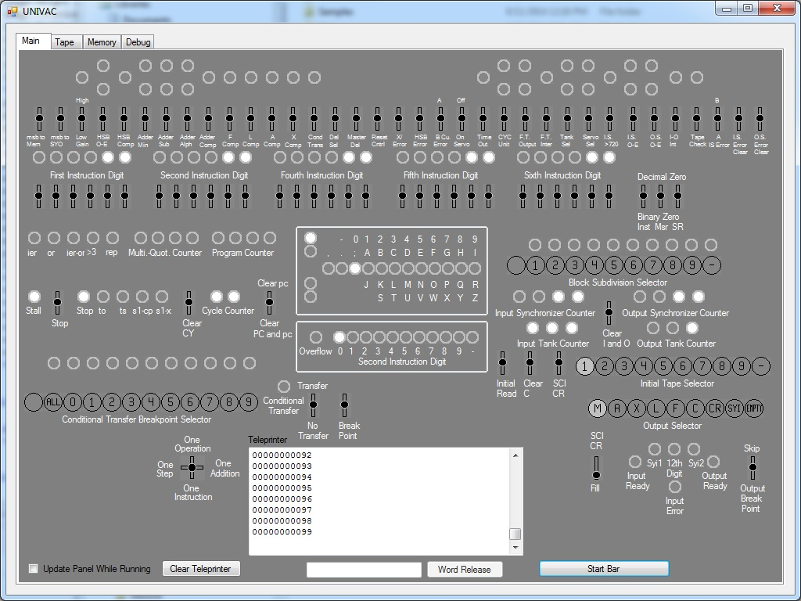
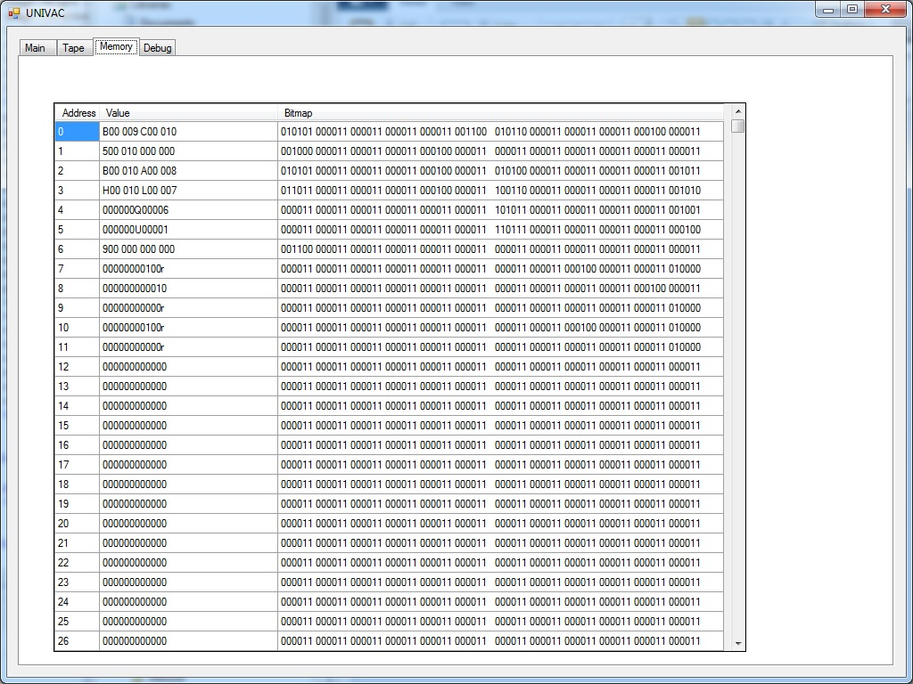
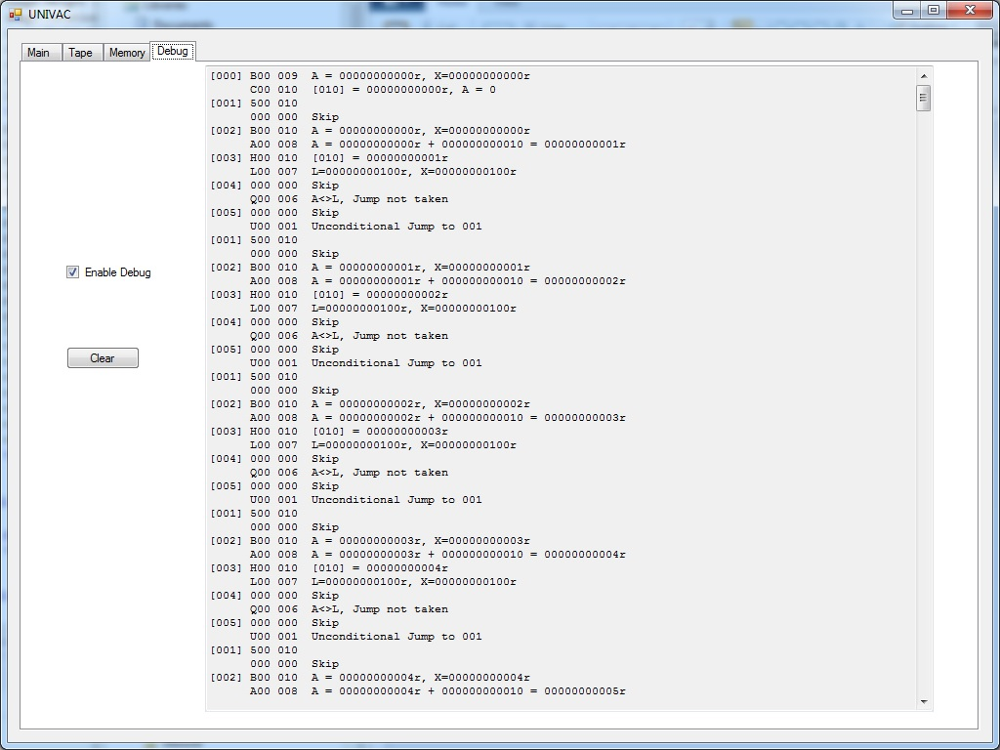

The first UNIVAC I was completed in March of 1951. It is considered to be the second commercial computer, with the LEO I being the first. However, the UNIVAC I was the first commercial computer in the US and is the first considered to be mass produced, with 46 systems being built.
The UNIVAC I consisted of 5,200 vacuum tubes, weighed around 29,000 pounds and consumed 125kw of power to run. The central complex of the machine (cpu and memory) was 4.3 meters by 2.4 meters and 2.6 meters high. The complete system occupied more then 35.5 square meters of floor space. The machine could perform about 1,900 operations per second with a clock speed of 2.25 mhz.
Like the EDSAC, UNIVAC I used mercury delay lines for its main memory as well as the majority of its registers.
Download the UNIVAC I simulator
Note: This program requires .net 4.0 framework to be installed


